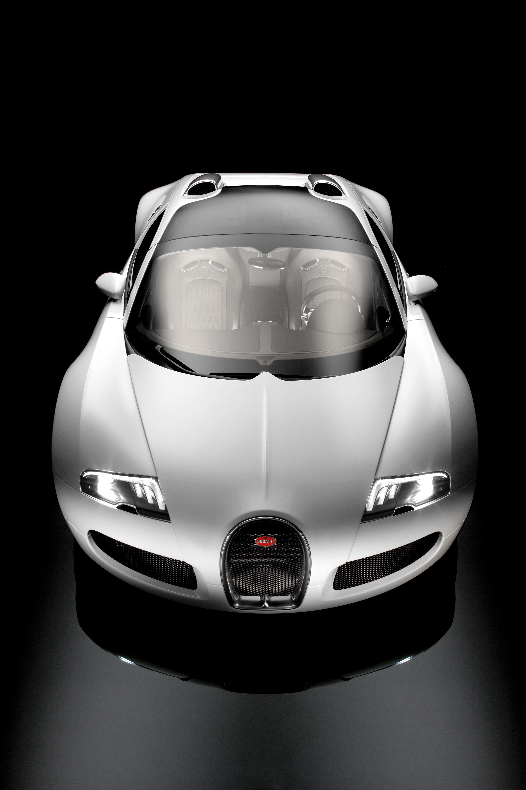

手工装配
3,500+ PARTS
每个零件由工匠手工装配,测试计算机全程监控——没有捷径,只有精度。

THE FIRST TO BREAK 400 KM/H

Veyron 家族第一款敞篷:1,001 PS 与可拆卸硬顶,闭顶极速 407 km/h。
1,200 PS、NACA 车顶进气,2010 年 7 月刷新量产车世界纪录。
1,200 PS 的敞篷之王,2013 年以 408.84 km/h 创下敞篷量产车纪录。
Veyron,现代意义上的第一台 hyper sports car——
2005 年,它以 1,001 PS 与 407 km/h 写下量产车历史的新一页。
从 1997 年的一枚信封草图,到 2001 年 1,000+1 PS 的首次点火,
再到 2005 年的量产交付——450 台,Veyron 用了八年,重新定义了「可能」。

1997 年,Ferdinand K. Piëch 在东京至名古屋的列车上画出 18 缸发动机草图;1998 年,大众购得 Bugatti 品牌权。四款概念车、一次次的工程极限——2005 年,构想成为现实。
从一枚发动机草图,到四款概念车,再到 2001 年 1,000+1 PS 的首次点火——Veyron 之路,始于对「不可能」的拒绝。

时任大众集团董事长的 Ferdinand K. Piëch 为发动机设下目标:输出超越一切现存之物。讨论从 V6、V8、V12 一路走到 18 缸——几个月后,大众购得 Bugatti 品牌权,发动机终于找到了归宿。
当时,不存在任何关于 12 缸以上量产发动机、或超过 350 km/h 量产车的文献与经验数据。

1998 巴黎车展 · Giugiaro 设计。6.3 升 W18、555 PS 的双门豪华轿跑,Art Deco 座舱。

1999 日内瓦 · 四门豪华轿车,同款 W18 心脏——Bugatti 的另一重身份。

1999 法兰克福 IAA · 第一台超级跑车方向的概念,Chiron 之名由此而来。

1999 东京 · Jozef Kabaň 笔下,Veyron 之名与量产方向就此确立。


Pierre Veyron(1903–1970)是布加迪的工厂车手——1939 年,他与 Jean-Pierre Wimille 驾驶 Type 57G Tank 赢得勒芒 24 小时耐力赛。以他的名字命名这台车,是 Bugatti 对速度传统最郑重的致敬。


8.0 升、16 缸、四涡轮——3,500 多个零件全部手工装配。2001 年首次点火,即输出 1,000+1 PS。
2001 年首次点火即输出 1,000+1 PS;45° 不对称点火间隔赋予它独一无二的声浪;Ion Current Sensing 逐缸监测点火——每一个细节,都为可靠与极致而设计。

开发规格书只给了四个目标:将超过 1,000 PS 传递到路面、跑得比 400 km/h 更快、0–100 km/h 小于 3 秒——以及最大的挑战:以这样的配置,仍能舒适体面地开去歌剧院。碳纤维单体壳重约 110 kg,前段铝结构仅 34 kg,工程师们用了八年,把四个目标变成一台车。
两个 8 缸单元呈 W 形排列,紧凑到体积不比一台 V12 更大——8.0 升,四涡轮。
每一根连杆、每一颗活塞都经过锻造与称重——3,500+ 零件的手工装配,从它们开始。
进气门、排气门与弹簧一一配对,手工完成——精度,是可靠性的前提。
8.0 升 W16 与 7 速 DSG 在 Molsheim Atelier 中合体——干式油底壳让重心更低。
换挡无需中断动力——1,250 Nm 的扭矩由它平稳承接,全时四驱把力量送往四条轮胎。
量产车首创的全碳单体壳,重约 110 kg,扭转刚度 60,000 Nm/°——乘客舱即生存舱。


每一台发动机都在台架上经历严格验证——16 缸,1,000+ PS。

工程师与车手在赛道与高速环道上,把每个组件推到极限。

碳陶瓷制动盘与八活塞卡钳——从 407 km/h 停下的力量。

模拟 400+ km/h 的测功机,只有 Veyron 能推到极限。
3,500+ PARTS
每个零件由工匠手工装配,测试计算机全程监控——没有捷径,只有精度。
≈400 KG
体积不比一台 V12 更大,重量仅约 400 公斤——工程,让奇迹变得紧凑。
45° 间隔
独立的不对称点火顺序,赋予 W16 独一无二的声浪——没有其他任何发动机像它。
40+ L
发动机双回路冷却容量超过 40 升,中冷器另有独立回路——规模在当时的汽车工业中前所未见。
2001 年,Loris Bicocchi 在 Michelin 的 Ladoux 试车场完成首驾——
当时 Veyron 的输出,是任何其他量产车的两倍。
没有参考系,一切都要重新建立:超过 400 km/h 时,空气动力学、稳定性与制动的规则彻底改变。
热区、冰面、高速环道——Veyron 在全球极端条件下被反复验证,直到它足以交给普通驾驶者。
我兴奋得等不到周一的官方测试——周日就去了。


2005 年 4 月 19 日,量产车首破 400 km/h;此后十年,纪录一次次被 Veyron 自己改写。
测试车手 Uwe Novacki 驾驶 Veyron 16.4,在 Ehra-Lessien 的高速直道上跑出 407 km/h——量产车第一次突破 400 km/h 大关。
我们预计平均值会达到 425 km/h——但今天的条件完美,允许更多。

更大的涡轮、新的中冷器、车顶 NACA 进气与新的碳纤维单体壳纤维结构——2010 年 7 月 4 日,Pierre-Henri Raphanel 在 Ehra-Lessien 跑出 431.072 km/h 的双向平均,Guinness 认证的量产车世界纪录。

1,200 PS、1,500 Nm,强化传动与赛车级阻尼;2013 年 4 月,Anthony Liu 驾驶黑橙涂装的纪录车跑出 408.84 km/h——敞篷量产车世界纪录,至今无人超越。
407 KM/H · 2005
大众首席安全驾驶教官——第一个把量产车开过 400 km/h 的人。
431.072 KM/H · 2010
布加迪 Pilote Officiel——驾驶 Super Sport 刷新量产车世界纪录。
408.84 KM/H · 2013
29 岁的中国企业家与赛车手——创下敞篷量产车世界纪录。


从裸碳的 Pur Sang,到瓷器的 L'Or Blanc——在 Veyron 身上,定制是一种常态:450 台,没有两台完全相同。

取消全部油漆,外露可见碳纤维的编织纹理——5 台,是 Veyron 对「材料即设计」的回答。Anscheidt:「回望 Pur Sang,就像回忆第一个孩子的诞生。」
Sang Noir(2008)以全黑车身与镀铬细节致敬 Type 57S Atlantic;
Grand Sport Venet(2012)与法国艺术家 Bernar Venet 合作——艺术,驶上了公路。

与柏林皇家瓷器厂 KPM 合作:蓝白波浪涂装以日本纸胶带定位、手工填漆三周完成;瓷器用于轮毂中心标、油/燃油盖、EB 徽章与中控镶嵌——1-of-1。

431.072 km/h 纪录车同款涂装:黑色可见碳纤维与 Arancia 橙。WRC 版限量 8 台,售价 €1.99m——纪录本身,成为收藏品。

「La Maison Pur Sang」铭牌——材料的纯粹,由内而外。

瓷器与波浪涂装呼应——KPM 的 250 年工艺,驶上公路。

每一处徽章,都是身份的宣告——EB,布加迪的签名。


六款传奇、18 台,全部基于 Grand Sport Vitesse——每一台,都是一段布加迪历史的现代转译。

2013 年 8 月于 Pebble Beach 首发「Jean-Pierre Wimille」,2014 年 8 月以「Ettore Bugatti」收官——18 台在最后一款发布前全部售罄。全部基于 Grand Sport Vitesse 的 1,200 PS W16。
3 台
致敬 1937 勒芒冠军 57G Tank:Bleu Wimille 蓝,尾翼下绘有勒芒赛道剪影。
3 台
致敬 57SC Atlantic:亮黑碳纤维,史上首个铂金马蹄格栅。
3 台
致敬 Type 35 与 Targa Florio:明蓝碳纤维,尾翼下绘有 Targa 赛道轮廓。
3 台
致敬雕塑家 Rembrandt:青铜色碳纤维,Cognac 皮革内饰。
3 台
致敬 Type 18「Black Bess」:全黑碳纤维与金色点缀,1913 年的速度传说。
3 台
致敬 Type 41 Royale:黑白「Yin-Yang」分色,抛光铝与碳纤维。


我们希望有一天,也许就在 Pebble Beach 的优雅竞赛上,现任车主的孙辈们会坐进这台 Ettore Bugatti 传奇版,开始思考这些材料的美丽,以及其中蕴含的历史。
2026 年,Veyron 二十周年——一台新的 1-of-1,向它的缔造者 Ferdinand K. Piëch 致敬。
Programme Solitaire 的第二款作品:1,600 PS 四涡轮,保留 Veyron 的后倾姿态与下降腰线——20 年后,最初的构想以新的方式重生。

2026 年 1 月 Rétromobile 巴黎发布,与初代 Veyron 16.4 同台展出。立体马蹄形格栅由整块铝材铣削而成;红色外漆采用多层工艺——银色铝基涂层之上叠以红色清漆,光影之下呈现深邃的立体感;圆形 Bauhaus 方向盘与嵌入中控的 Audemars Piguet 腕表——每一处细节,都致敬 Piëch 1997 年的构想。


W16 · 8.0 升 · 四涡轮 · 全时四驱。数据来自布加迪官方新闻稿与 2005 年技术规格。
最大功率Veyron 16.4 · @ 6,000 rpm
最大扭矩@ 2,200–5,500 rpm
极速Speed Key 解锁 · 首破 400
0–100 km/h设计目标:3 秒以内
技术数据来自布加迪官方新闻稿与 2005 年《Veyron 16.4 技术规格》及官方公布值。 来源:BUGATTI NEWSROOM · Veyron →